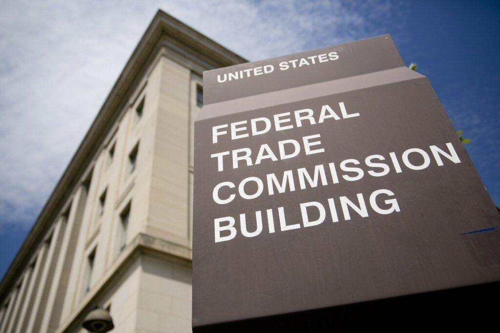

For 40 years the business of translating one language to another was controlled by the AIIC, a group of professional freelance translators who worked for governments, the United Nations and every business you could imagine. They set fair rates for their services and standards for the quality of their work, but weren’t technically employed by the AIIC. They were part of the gig economy and they made their livings as independent contractors.
In 1994 a group of businesses complained to the Federal Trade Commission arguing that freelance translators had no right to determine what fair pay was for themselves. They argued to the FTC that freelancers were independent businesses and that setting a minimum standard for their labor was the the same as operating a cartel. In the dull legalese of the day the FTC ruled in their favor saying, “We find that respondents price-fixing practices and market allocation rules are per se unlawful agreements in restraint of trade and a violation of the FTC Act.” After that companies no longer had to be held back by the tyranny of paying a living wage to their skilled workers. Instead, translators were forced to slash their prices against one another in an all out race to the bottom. The result was that today translators don’t make nearly what they once did.
No one predicted that self-employment would be the new employment standard for the millennium. According to the Bureau of Labor and Statistics the number of self-employed people has gone up by half since the ruling. As millions of people join the “sharing economy” or have to freelance their way into a job, the rights of freelancers are more important now than they ever were.
Being self-employed has some major advantages–creative control, setting your own hours and being your own boss–but there are also a lot of disadvantages, too. We pay twice the social security taxes–the so-called “self-employment tax” means we pay the employers share as well as our own–and we have no protections for minimum earnings. When you’re a freelancer your work is your commodity, and like all commodities, its value fluctuates with the market.
While there have been some brave attempts to organize freelancers since the FTC ruling. The Freelancer’s Union, whose founder Sarah Horowitz won a MacArthur Genius award, the sheer numbers of independent workers under its banner to negotiate for slightly better deals on health care. However barring that one incremental victory, no one advocates for freelancers. And no union can legally bargain collectively on our behalf without running afoul of the Federal Trade Commission.
All of this is to say: this is exactly why I’m attempting to change the way freelancer writers and journalists do business. Since it is illegal to actually negotiate as a group for better wages and contracts, the only real option that writers have to affect the market for their stories is to bargain individually, but on a massive scale. Wordrates & Pitchlab is not a union. But if it works the way I hope that it will, it will use the power of information sharing to make the market for words a little bit more fair. While we can’t set a minimum rate for our work, we can allow and agent to negotiate for higher rates on our behalf. It’s perfectly legal to turn down a contract if the publication wants to weaken your claim to copyright. And, instead of competing against each other for lower and lower rates, we turn the scales on the industry to make publications compete against each other.
As of right now Wordrates is 62% of the way to is goal of $6500 and has 18 days to go. We have 113 backers, which means 113 writers who are eager to fight for better pay, contribute market information and mentor each other to become better negotiators. However, since Kickstarter is all-or-nothing funding it means that we need to actually reach the goal if we want to see it built. So please share it on Facebook and Twitter and tell your friends in the media that if they want to see a living wage for writers, this might be the best way to achieve it.